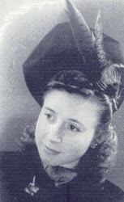

Wednesday, December the 19th, 2012
back to: title, date or indexes
The first time I flew in an aeroplane was almost forty years ago, on an Aeroflot flight to the Soviet Union. My abiding memory is of the many flies buzzing around within the plane. Perhaps it was an Aeroflot thing. I mention this because, having flown to and from Maryland a few weeks ago, I am still debilitated and twitching and shattered by whatever hideous germs were aboard the planes I sat slumped in for hours. That is why the unaccustomed silence at Hooting Yard has persisted, for longer than I would have thought possible.
Yet there is a certain appeal in being an invalid. One gets the opportunity to emit tremulous and woebegone sighs, for example, like unto a dying swan. Having said that, I do not think I have ever witnessed the death of a swan. Perhaps they do not sigh, but shriek or whoop. I could slaughter a swan to find out, when I am better, but, if caught in the act, I would no doubt be arrested and roughed up by Inspector Cargpan and his goons down in the basement of the local nick.
My local nick, incidentally, which is now closed down and shuttered, is the very same one where Alfred Hitchcock was once locked up. His father, who was a pal of the local coppers, took the young Alfred to the station and had him chucked in a cell for a while, not because he had done anything amiss, but to show him what would happen to him if ever he did do something amiss. It is not difficult to see the germ of many a later Hitchcock hero's predicament in that childhood incident. It would be interesting to discover if an icy blonde and an egg were somehow involved, and then we would have the key to the adult Hitchcock's obsessions. Some say swans are among my own obsessions, and they may well be correct. I cannot, however, recall any childhood traumas in which a swan played a significant part.
Another thing about the invalid state is that my dreams seem particularly vivid. Last night, for example, I dreamed that my mother was still alive at eighty-seven, had become a keen aficionado of Het Internet, and had, for the past few years, been engaged in a daily exchange of emails with Keith Richards, for whom she had become a sort of ancient Muse. When I awoke, I found it very very difficult to acknowledge that this was merely a figment of my fuming brainpans.

Keith Richards' ancient Muse, before she was ancient